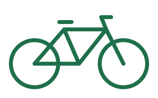

Przegląd podstawowy
Kontrola hamulców, przerzutek, łańcucha i ciśnienia w oponach.
od 120 zł
Szprycha
Przeglądy, naprawy i regulacje. Szybko, uczciwie i w rozsądnej cenie.

Kontrola hamulców, przerzutek, łańcucha i ciśnienia w oponach.
od 120 zł
Najczęściej wybierane
Wymiana dętki, regulacja hamulców i przerzutek, centrowanie kół.
od 40 zł
Pełne czyszczenie, smarowanie, wymiana zużytych części i test jazdy.
od 250 zł
| Usługa | Cena |
|---|---|
| Przegląd podstawowy | 120 zł |
| Wymiana dętki | 40 zł |
| Regulacja hamulców i przerzutek | 80 zł |
| Wymiana łańcucha | 90 zł |
| Serwis generalny | 250 zł |